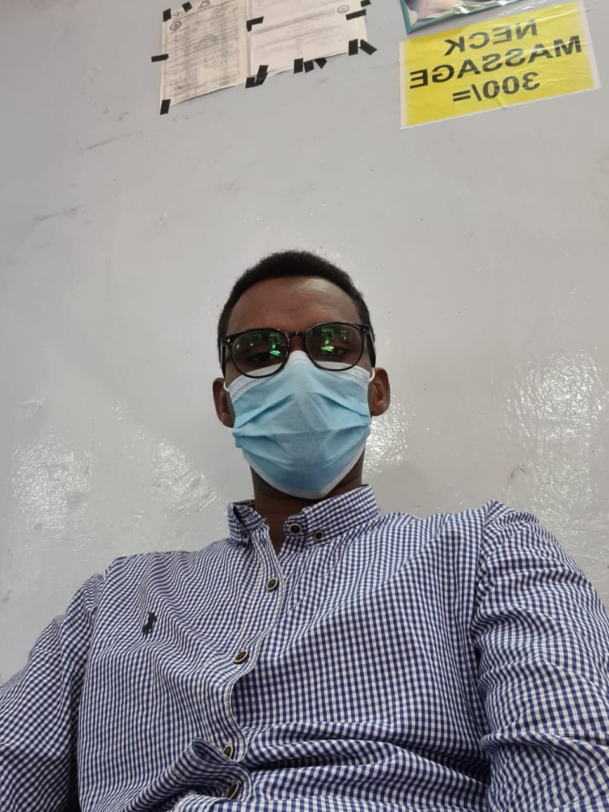

This is my personal profile
Name:Abdinasir Adan Maalim
i am a vet technician and a developer too
EDUCATION BACKGROUND
SEPT 2013 –DEC 2016: Diploma in Animal health and production ,
Mount Kenya university
DEC 2012-JAN 2013: Certificate in Information Technology,
Excel technology
FEB2009- NOV2012: Kenya Certificate of Secondary Education,
waza Boys Secondary School
JAN 2001-NOV 2008: Kenya Certificate of Primary Education,
zawa Primary School.
The following are my hobies;
- swimming
- reading
- playing football